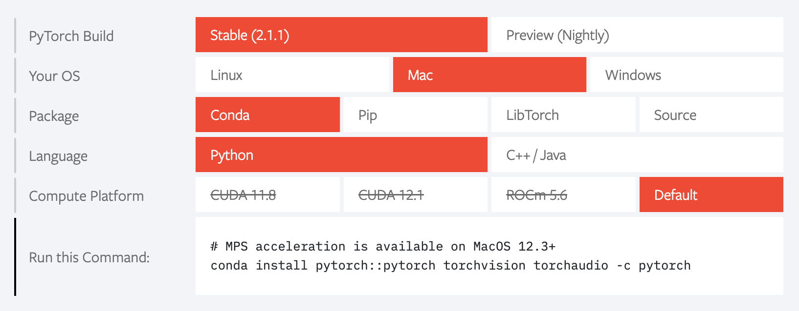

I recently moved from Windows to Mac. One of the things which needed attention in making that shift was to re-install everything around Fast.AI.
This blog post is mainly a personal documentation going through Live Coding Session 1 and Live Coding Session 2 (again), but I hope this might also be useful to others.
Starting with a blank Mac
Before we can talk about all the cool machine learning stuff, we need to start with some basics like installing some basic software on the Mac. So if you are already familiar with MacOS you might want to skip this part.
The Terminal instead of Ubuntu
It may sound trivial, but let’s state the (maybe no so) obvious: Instead of the Windows Subsystem for Linux (WSL), you use the Terminal App on a Mac. Navigation works the same, but there are some fine details to note.
When I followed the tutorials of the Live Coding Sessions for Fast.AI (Link), I needed to use wget, but it did not exist on my Mac, because it was not installed. No problem, but how do you install software via the Terminal on a Mac?
Homebrew
When it comes to installing software on a Mac via the terminal, it seems that Homebrew is the de-facto standard. To install it, run the following command in the terminal:
/bin/bash -c "$(curl -fsSL https://raw.githubusercontent.com/Homebrew/install/HEAD/install.sh)"Afterwards, Homebrew needs to be added to the PATH environment variable: (exchange your username)
(echo; echo 'eval "$(/opt/homebrew/bin/brew shellenv)"') >> /Users/chrwittm/.zprofile
eval "$(/opt/homebrew/bin/brew shellenv)"If everything was successful, you should be able to execute
brew --versionAdditionally, you can now install software like wget like this:
brew install wgetInstalling Miniforge
With a few basics sorted out, we can now install python. The recommendation in the Live Coding Session is the use Mambaforge, but in the meantime, it has been merged with Miniforge, therefore, this is want I installed:
wget https://github.com/conda-forge/miniforge/releases/latest/download/Miniforge3-MacOSX-arm64.sh
bash Miniforge3-MacOSX-arm64.shAfter restarting the terminal, you can see the (base) prefix to the prompt, signalling that python is available.
Additionally, you can now execute which python to see the path where Python is installed.
Installing additional Python packages
The recommended way to install packages is via mamba, as per the tutorial, execute
mamba install ipythonInstalling Pytorch
Next we install pytorch with the following parameters:

mamba install pytorch::pytorch torchvision torchaudio -c pytorchInstalling Fast.AI
Once that is done, we can install the Fast.AI and additional packages:
mamba install jupyterlab
mamba install ipywidgets
mamba install -c fastai fastai
mamba install -c fastchan fastbook
mamba install -c fastchan sentencepieceInstalling Quarto (for writing this blog)
To be able to update this blog, I needed to re-install the related packaged. More details are available in this blog post:
mamba install -c fastai -y nbdev
softwareupdate --install-rosetta
nbdev_install_quartoSetup of Git
Git was already installed on my machine (brew install git) which I did as part of the installation of VS Code, so here we only cover the setup done in the terminal:
git config --global user.name "Your Name"
git config --global user.email "your.mail@service.com"
ssh-keygen
cat ~/.ssh/id_rsa.pubNow you add the key to your Github keys. Afterwards you should be able to login
ssh git@github.comAdding Git Large File Storage (LFS) to be able to push large files to GitHub (like .pkl-files):
brew install git-lfsThis concludes the installation of Fast.AI on an Apple Silicon Machine. In a follow-up blog post I will talk about my experience on running Fast.AI on Apple Silicon.